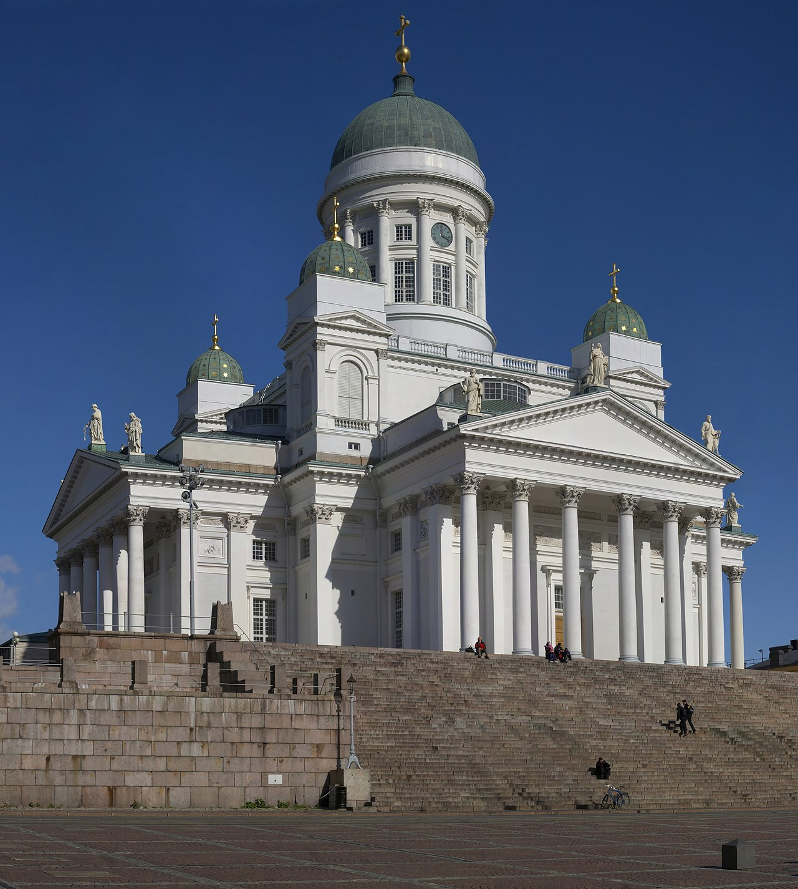

Финляндия

Финляндия — страна, где тишина — вид ресурса, и она возобновляемая. Хельсинки компактный и честный: кафедральный собор на лестнице, район Суоменлинна — морская крепость на четырёх островах, до которой паром идёт пятнадцать минут и стоит меньше билета в метро. Финская сауна — не спа, а гражданство: общественные сауны работают по вечерам, после бассейна с прорубью; окунание входит в программу добровольно-обязательно. Дизайн-квартал: Marimekko с полосатыми чашками, Iittala со стеклом, и всё это в пешей доступности от кофе с коричным пайком. Зимняя Финляндия — отдельная глава: Лапландия со снегоходами, хаски и оленьими фермами, где Санта принимает по расписанию, а сияние — по погоде. Летом — озёрный край: Сайма, в которой сто тысяч озёр растворяются друг в друге, и коттеджи на сваях, где вы наконец прочитаете ту книгу. Финский характер совпадает с климатом: прямолинейный, тёплый внутри и не тратящий слов впустую. Отдых здесь получается глубоким.
Что знать перед поездкой
- Общественная сауна — вечером, с окунанием
- Суоменлинна — на пароме, не на экскурсии
- В Лапландии — снегоход и хаски в один день